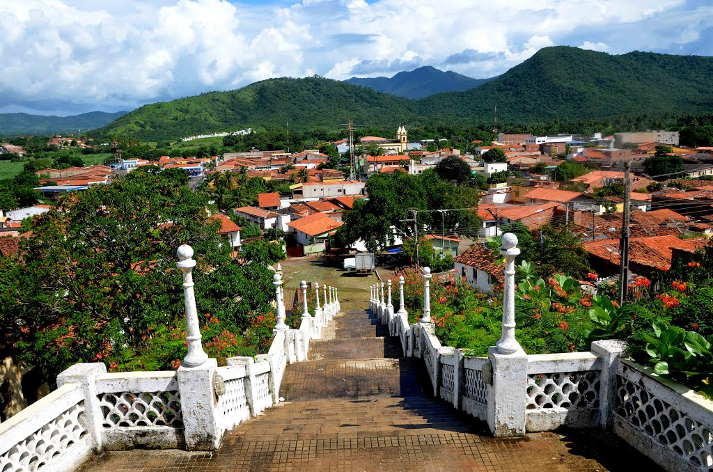
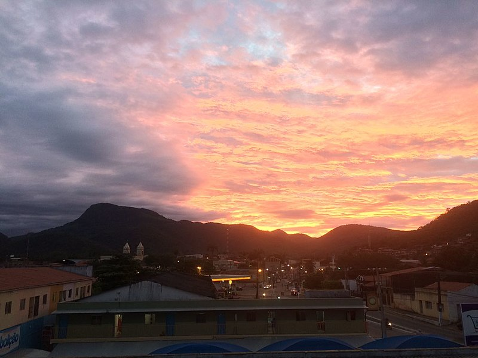
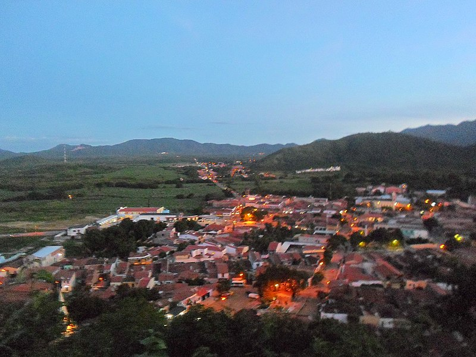
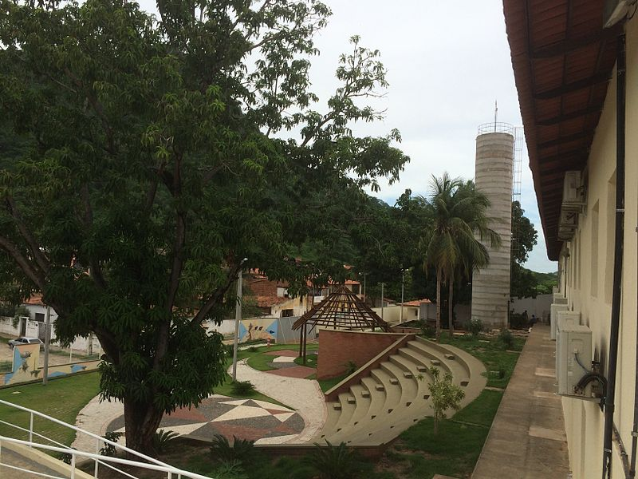
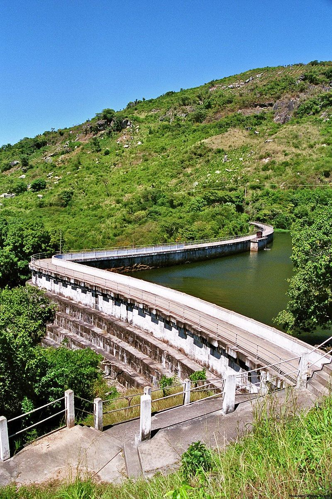
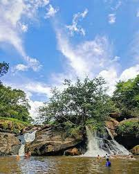
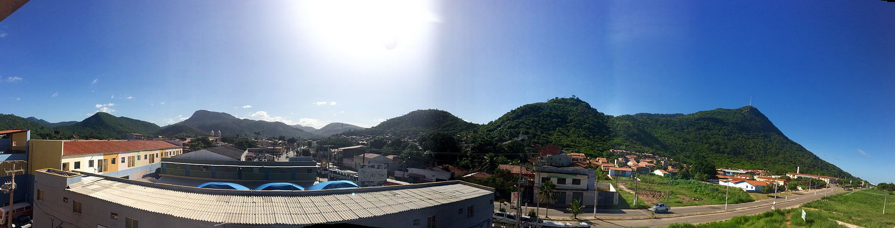

Informações técnicas sobre relevo, população, IDH etc.
| INFORMAÇÕES | |
|---|---|
| Municípios limítrofes | Acarape, Palmácia, Aracoiaba, Guaiúba, Baturité, Pacoti, Barreira |
| Fundação | 28 de dezembro de 1868 (153 anos) |
| Área total | 225,626 km² |
| Clima | tropical quente sub úmido |
| IDH | 0,626 — médio |
| PIB | R$ 5 231,99 |
| INFORMAÇÕES TERRITORIAIS | |
|---|---|
| Número de habitantes | 29 053 habitantes |
| Superfície de Redenção |
22 559 hectares
225,59 km² (87,10 sq mi) |
| Densidade populacional | 128,8 ha./km² |
| Altitude de Redenção | 92 metros de altitude |
| Coordenadas geográficas decimais |
Latitude:
-4.22637
Longitude: -38.7314 |
| Coordenadas geográficas sexagesimais | Latitude: 4° 13' 35'' Sul , Longitude: 38° 43' 53'' Oeste |
| INFORMAÇÕES DO MUNICÍPIO | |
|---|---|
| Endereço da Prefeitura Municipal de Redenção |
Redenção
Prefeitura de Redenção
Rua Padre Angelo 504 -A REDENÇÃO - CE, 62790-000 Brasil Work +55 85 3332-1258 Fax +55 85 3332-1258 |
| Telefone da prefeitura |
(85) 3332-1258
Internacional: +55 85 3332-1258 |
| Fax |
(85) 3332-1258
Internacional: +55 85 3332-1258 |
| Endereço eletrônico da prefeitura |
pmrec@bol.com.br
|
| Site oficial do município | redencao.ce.gov.br |
| INFORMAÇÕES DO ADMINISTRATIVAS | ||
|---|---|---|
| Prefeito de Redenção | DAVID SANTA CRUZ BENEVIDES | |
| Partido politico | PDT | |
| INFORMAÇÕES DE TRANSPORTE | |
|---|---|
| Transporte urbano disponível | - |
| Aeroporto |
Aeroporto Internacional Pinto Martins
Aeroporto Dix-Sept Rosado
186.5 km
Aeroporto de Sobral
188.4 km
|
| INFORMAÇÕES DE DISTÂNCIA A OUTRAS CIDADES | ||
|---|---|---|
| São Paulo : 2313 km | Rio de Janeiro : 2134 km | Brasília : 1633 km |
| Salvador : 974 km | Belo Horizonte : 1826 km | Manaus : 2369 km |
| Curitiba : 2615 km | Fortaleza : 60 km mais perto | Goiânia : 1801 km |
| Belém : 1801 km | Porto Alegre : 3159 km | Guarulhos : 2291 km |
| Campinas : 2265 km | São Luís : 648 km | São Gonçalo : 2.528 km |
| Distância calculada em linha reta! | ||
Conheça mais sobre a história de Redenção.
A região dos sopés do Maciço de Baturité e ao redor das margens do Rio Acarape/Rio Pacoti era habitada por diversas etnias como os Potyguara, Jenipapo, Kanindé, Choró e Quesito, recebeu a partir do século XVII diversas expedições militares e religiosas.
Com a implementação da pecuária no Ceará no século XVII, as terras de Redenção também foram beneficiadas com a agricultura da cana-de-açúcar. A partir do século XIX, engenhos de Redenção tiveram como mão de obra escravos africanos, desta forma senzalas e pelourinhos vieram a fazer parte do modelo urbano.
O povoado que deu origem à vila foi uma distrito policial criado em 1842 e depois desmembrado de Baturité em 1868 com o nome de "Acarape". No ano de 1871 foi criada a Câmara Municipal da cidade.
Em 1882 é criada a "Sociedade Redentora Acarapense". Em 1 de janeiro de 1883, chegavam à então Vila Acarape, abolicionistas como Liberato Barroso, Antônio Tibúrcio, Justiniano de Serpa, José do Patrocínio e João Cordeiro, com a finalidade de assistirem a alforria de 116 escravos do lugarejo. A partir daquele ato, em frente à igreja matriz local, não haveria mais escravos ali, ganhando a vila o nome de Redenção, pioneira em libertar seus escravos no País.Em reconhecimento ao fato de ter sido a primeira cidade do Brasil a abolir a escravidão, Redenção sedia a UNILAB -Universidade Federal de Integração Luso-Afro-Brasileira desde 2009.
Saiba mais sobre os melhores lugares e o que fazer em Redenção.
Busto da Princesa Foi construído em homenagem à princesa Isabel que libertou os escravos no Brasil. O monumento faz alusão ao cinquentenário da abolição no município e fica localizado na Praça da Princesa Isabel, no Centro de Redenção
Serra do Cruzeiro - Monte das Graças Cartão postal do município, com uma escadaria de 720 degraus e com aproximadamente 180 metros de altura, que conduz a um grande crucifixo e à imagem de Nossa Senhora das Graças.
Hospital Dermatológico de Antônio Diogo – Colônia Construída em 1928, o local serviu para isolamento de pessoas portadoras de hanseníase, durante muitos anos. O local possui Cine-teatro, enfermaria, sala de fisioterapia, biblioteca, consultórios e outros. Localizado no distrito de Antônio Diogo.
Igreja de Nossa Senhora da Imaculada Conceição – Matriz Concluída em agosto de 1868, em estilo românico, a Igreja é um atrativo bastante visitado pelos turistas. Localizado na Praça da Matriz, no Centro de Redenção.
Museu Histórico e Memorial da Liberdade O museu, que faz parte do centro cultural que também abriga biblioteca pública e ilha digital, tem, em seu acervo, documentos históricos e raros como livros de compra e venda de escravos, objetos ligados aos escravos – inclusive instrumentos de tortura – peças de antigos engenhos, mobília, objetos sacros, entre outros.Localizado na rua José Costa Ribeiro, 102.
Fazenda Gurguri – Senzala O local conserva ainda uma estrutura do período da escravidão. Localizado na Serra do Gurguri, a 18 km da sede do município. Foi transformada numa pousada. Acesso pela estrada de Barra Nova, via Gurguri.
Açude Acarape do Meio Represa do rio Pacoti. Localiza-se no distrito de Barra Nova, a 12 km da sede. À esquerda da barragem encontra-se a Capela de São Gerardo. Atualmente é administrado pela Companhia de Gestão dos Recursos Hídricos - COGERH.
Capela de Santa Rita A Capela foi inaugurada em 29 de dezembro de 1917. Construída em estilo gótico. Possui uma escadaria com 109 degraus. Bastante visitada por devotos e turistas. Proporciona uma bela vista parcial da cidade.
Capela de São Miguel Capela em estilo gótico eclético, construída com financiamento de Juvenal de Carvalho, antigo dono do Sítio Livramento. Mausoléu do Padre ngelo Custódio. Inaugurada em 21 de março de 1936.
Praça da Liberdade – Obelisco Monumento construído em homenagem ao cinquentenário da abolição neste município, 1933, e à Sociedade Redentora Acarapense. Estrutura alusiva a um pelourinho. Localiza-se na Praça da Liberdade, no centro da cidade de Redenção.
Cachoeira de Paracupeba Localizada na área serrana, há 9 km do centro da cidade, a cachoeira está localizada no distrito de Barra Nova, sendo uma das maiores atrações turísticas do município.

Veja como chegar nos melhores pontos de Redenção.